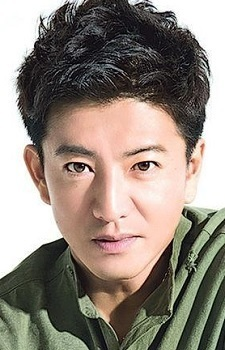

Takuya Kimura is a Japanese actor, singer, and radio personality. He is a member of SMAP, an idol group. He is married to Shizuka Kudo.
- Gender: Male
- Birthday: November 13, 1972
- Hometown: Chiba, Japan
| |
Takuya Kimura is a Japanese actor, singer, and radio personality. He is a member of SMAP, an idol group. He is married to Shizuka Kudo.
|
 |
|---|
 |
Howl | Howl's Moving Castle | Howl is a mysterious, reclusive wizard. He is very flamboyant and wicked. He has a moving castle. In reality, he is a charming man who is intelligent and considerate. |